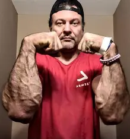

About Devon Larratt
Devon Larratt is a Canadian professional arm-wrestler, widely considered one of the greatest technical arm-wrestlers in the world. He's known for his unique "no-limits" approach to the sport, incredible hand and wrist strength, and his ability to defeat physically larger opponents through superior technique and endurance.
Key Career Highlights
- Defeated legendary arm-wrestlers in high-profile supermatches.
- Multiple-time winner of the WAL (World Armwrestling League) Heavyweight Title.
- Known for his long-standing rivalry and dominant victories over other top competitors.
- Achieved global recognition by defeating both strongmen and bodybuilders in exhibition matches.
Fighting Style and Contributions
- Technical Prowess: Master of a wide range of techniques, including the top roll and hook.
- Unmatched Stamina: Known for his ability to outlast opponents in long matches.
- "King's Move": Popularized a controversial, yet highly effective, defensive maneuver.
- Promotional Influence: A prominent figure in promoting the sport through his YouTube channel and social media.